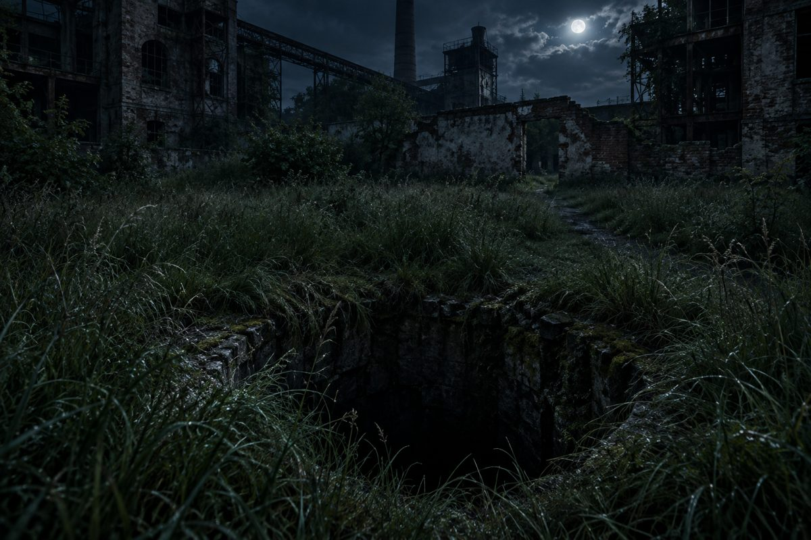

The path runs up to the wall and stops.
You go round the side, where the grass is long and nobody has cut it in years.
The ground gives way under your left foot.
There's no warning and no sound, just the drop, and the last thing you understand is that whatever you've fallen into was dug a long time before you got here.
The End
Start again